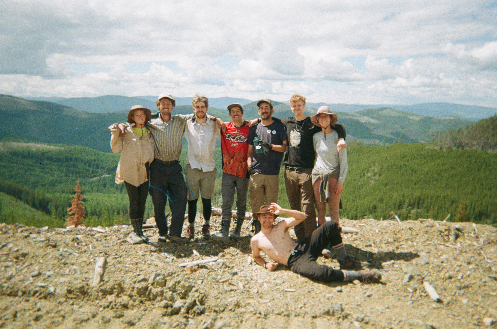

Having 8 years experience working with large and diverse teams planting trees, 3 of which working as a crew lead, I have gained exceptional communication skills. I have learned how to teach and delegate inexperienced, new planters as well as plan and work alongside professionals in the silviculture industry.
I have an optimistic passion for technology and strong desire to learn new skills and systems in the field. During my first year as an Information and Computer Systems student at Camosun college, I have learned foundational and valuable skills in programming (Java, Python), networking and administration (Linux and Microsoft Shells), and web development (CSS, HTML, Javascript)
Using computer systems as a medium to create digital art and music, I have learned how to bring a fun and creative outlook wherever I go. It has also taught me how learn the ins and outs of new software very quickly. My creativity makes me a keen problem solver and I will rise to any challenge if given the opportunity
Education
Diploma, Information and Computer Systems Technology
Camosun College
Expected completion August 2023
Foundational IT skills and full stack knowledge of: CSS, HTML, Java, Linux and Microsoft systems, and Python
Strong team building with classmates, helping and getting help with assignments and projects
Certification, Google Cybersecurity Professional
Coursera.org
Expected completion January 2024
Foundational knowledge of frameworks and controls such as: CISSP domains, NIST frameworks, the CIA traid, Playbooks, and Ethics in the workplace.
Understanding of Splunk and Chronicle SIEM tools
Common network protocols and their vulnerabilities
Certification, Health Care Assistant
Camosun College
Graduated April 2019
Practical job placement experience utilizing strong communication skills with elderly and disabled people.
Graduated with honors on the dean’s list.
Experience

Treeplanting Crew Lead
Brinkman Reforestation
Work efficiently and effectively with diverse teams of 6+ people. Delegating and communicating with other crew leads to create safe and productive strategies.
Ability to plant 2000+ trees a day, on top of leading a team. Never letting my leadership responsibilities get in the way of my productivity and vice versa.
Brought a professional and fun attitude to very stressful, harsh, and unforgiving environments. Knowing when to boost up my peers and finish things on time.